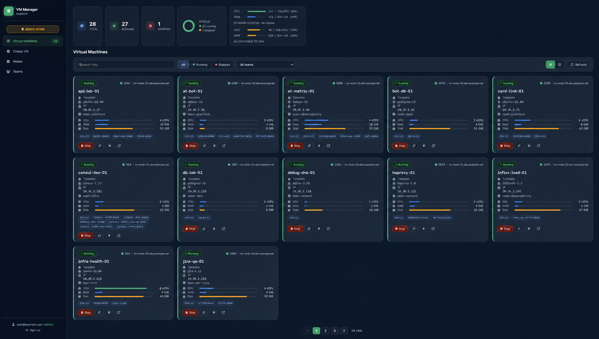
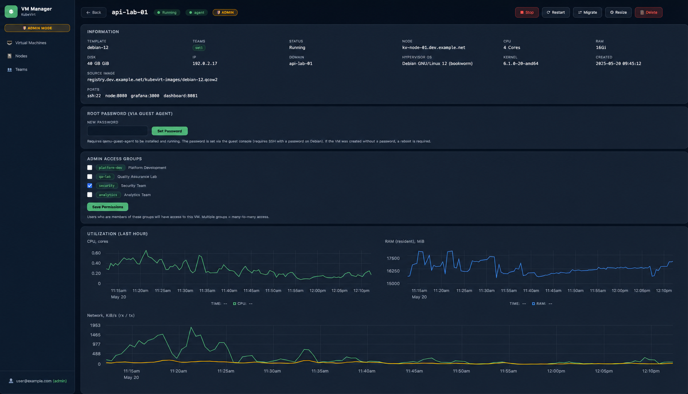
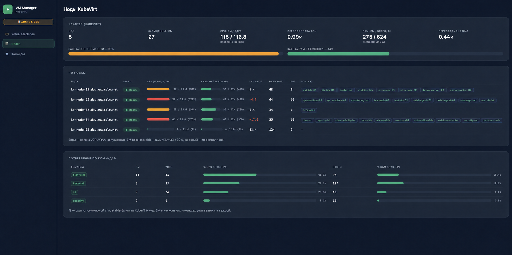
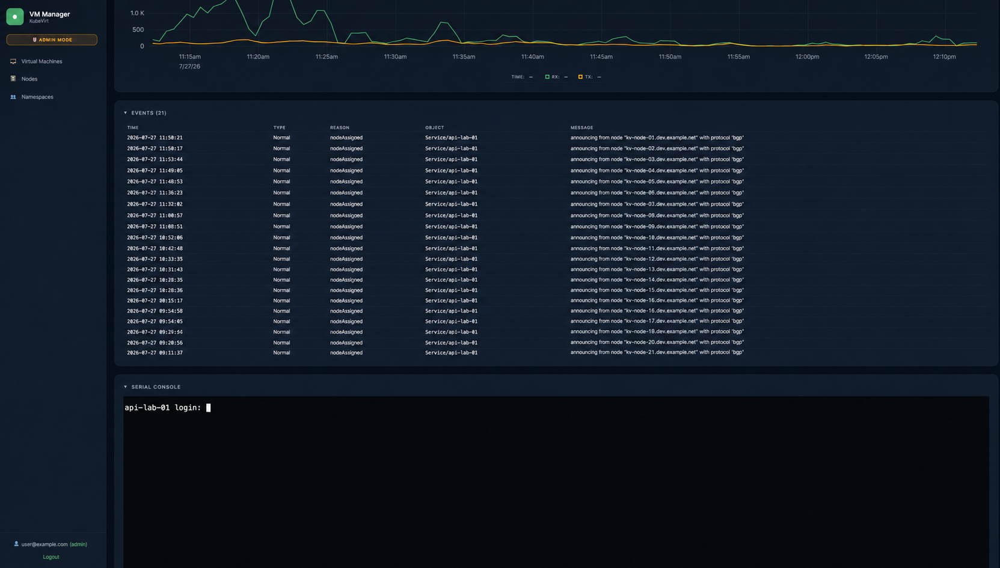
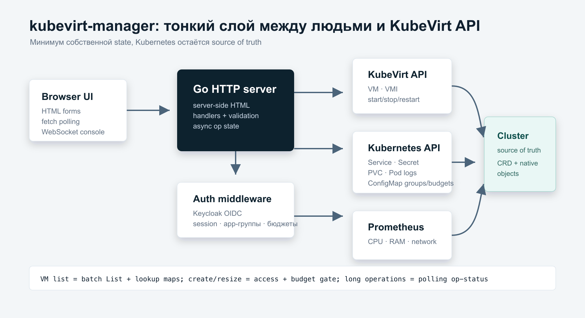
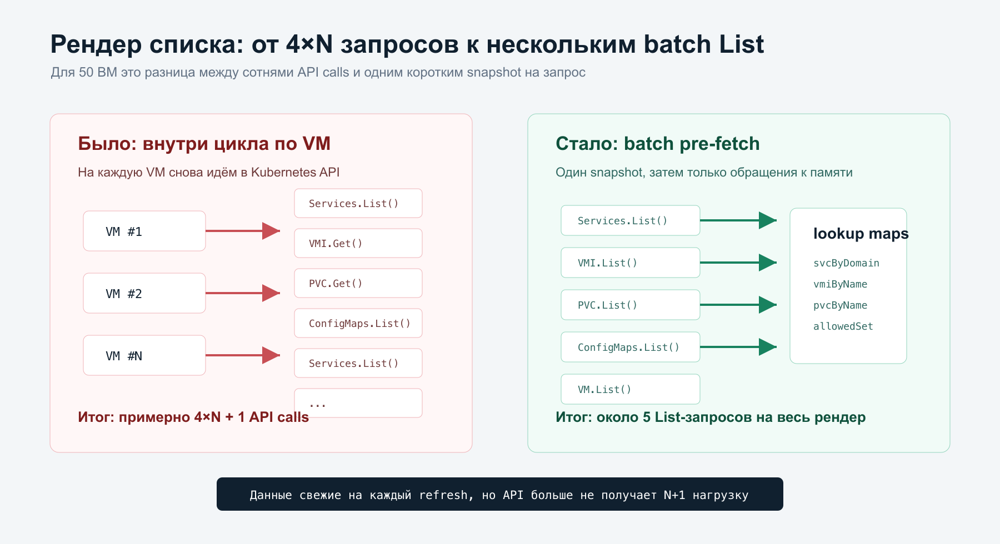

Сначала контекст. В инфраструктуре обычно уже есть production-виртуализация: надёжная, взрослая, с регламентами, ответственностью и понятной ценой ошибки. И есть разработка, которой постоянно нужны обычные виртуальные машины: Debian для тестов, PostgreSQL-стенд, маленький Kubernetes-in-Kubernetes, временная ВМ под отладку, окружение для эксперимента на пару дней.
Если каждую такую dev-VM заводить в production-виртуализации, начинается медленное размазывание контуров. Продовая платформа обрастает временными стендами, ресурсные заявки смешиваются с разработческими экспериментами, cleanup зависит от дисциплины людей, а разработчик всё равно ждёт, пока кто-то создаст ему машину.
Идея была в другом: сделать отдельный внутренний dev cloud в дев-контуре. Разработчик получает пространство и свободу: сам создаёт ВМ из шаблона, сам открывает нужные порты, сам смотрит консоль и метрики. Платформа при этом задаёт рамки: шаблоны, доступы, лимиты, бюджеты команд и границы контура. Production-виртуализация остаётся для production-нагрузки, а эксперименты живут там, где им место.
Так появился небольшой kubevirt-manager: Go-приложение с server-side HTML, которое работает как внутренняя панель управления виртуалками в Kubernetes. Оно не пытается заменить Harvester, OpenShift Virtualization UI или полноценный портал. Это тонкий слой между людьми и KubeVirt API, написанный под конкретный dev-contour процесс: быстро дать разработчику стенд, но оставить доступы, потребление и границы среды под контролем платформы.
Все имена ВМ, команд, нод, домены, IP-адреса, registry и пользовательские идентификаторы на скриншотах ниже заменены. Сценарии, структура интерфейса и классы проблем сохранены.
Эта статья не про установку KubeVirt с нуля. Она про то, что началось после первой работающей веб-морды: N+1-запросы на списке ВМ, повторные действия во время долгих операций, конфликты resourceVersion, модель доступа и граница между учётом командных ресурсов и настоящей квотой.
Зачем отдельный dev cloud#
Главная ценность здесь не в том, что у KubeVirt появилась веб-морда. Главная ценность — в разделении контуров и ответственности.
Production-виртуализация обычно оптимизирована под стабильные нагрузки: важные сервисы, долгоживущие машины, понятный lifecycle, change management. Разработка живёт иначе. Ей нужны короткие циклы, временные стенды, быстрый resize, возможность что-то сломать и пересоздать без заявки на каждый шаг.
Отдельный dev cloud даёт несколько практических эффектов:
- не нужно плодить временные ВМ на production-виртуализации;
- разработчики получают self-service без выдачи им административного доступа к кластеру;
- команды работают в рамках понятного бюджета CPU/RAM/диска;
- платформа контролирует шаблоны, сеть, доступы и опасные операции;
- эксперименты остаются в дев-контуре и не влияют на production-нагрузку;
- cleanup и accounting можно строить вокруг команд, а не вокруг ручных заявок.
Бюджет здесь не ограничивает свободу, а делает её безопасной. Если команда знает, что у неё есть, например, 48 vCPU, 192 Gi RAM и 1 Ti диска в dev cloud, она может сама решать, какие стенды поднимать сегодня. Платформа должна вмешиваться только когда запрос выходит за согласованные границы.
Если у вас ещё нет внутреннего cloud-портала, это не обязательно должно начинаться с большого продукта, каталога услуг и отдельной команды разработки. В dev-контуре можно начать с малого: несколько поддерживаемых шаблонов, понятные бюджеты команд, простая авторизация и UI над ограниченным набором операций. Уже это снимает десятки ручных заявок и даёт разработчикам самостоятельность без выхода в production-виртуализацию.
Коротко#
Панель умеет:
- показывать список ВМ с состоянием, CPU, RAM, диском, IP, портами, шаблоном, владельцем и нодой;
- фильтровать список по статусу, команде и поиску;
- создавать ВМ из заранее подготовленных шаблонов;
- стартовать, останавливать, рестартовать и мигрировать ВМ;
- менять CPU/RAM с явным предупреждением о рестарте;
- выполнять resize асинхронно, с live-логом фаз операции;
- управлять портами
LoadBalancer Serviceдля каждой ВМ; - открывать serial-консоль в браузере;
- показывать логи
virt-launcher,dmesgгостя и графики из Prometheus; - ограничивать доступ через Keycloak и app-группы;
- показывать потребление ресурсов по командам, ёмкость нод и переподписку CPU/RAM.
Принципиально важная деталь: это не портал для случайных пользователей. Целевая аудитория понимает, что такое CPU/RAM, порт, сервис, downtime и шаблон ВМ. Поэтому интерфейс можно делать плотным и инженерным, без попытки спрятать все технические сущности. Но повторные клики во время операции, устаревшие данные, странные ошибки Kubernetes API и лишние права всё равно остаются проблемами продукта, а не пользователя.
Как выглядит UI#
Пользовательская часть — это рабочий dashboard, а не лендинг. На первом экране должны быть видны ВМ команды, статусы, IP/порты, ресурсы, владелец, быстрые действия и создание новой VM. Разработчик приходит сюда не читать инструкцию, а поднять стенд, открыть порт, посмотреть состояние и уйти дальше работать.

На detail-странице важен другой слой: информация о шаблоне и ноде, команды доступа, порты, root-пароль через guest-agent, графики CPU/RAM/network и действия над VM. В админском режиме здесь же можно управлять привязкой команд к VM, чтобы доступы оставались видимыми и проверяемыми.

Админская страница отвечает уже не на вопрос «что происходит с этой ВМ», а на вопрос «что мы пообещали пользователям и куда это разместилось». Она сводит allocatable-ёмкость KubeVirt-нод, заявки запущенных ВМ, переподписку по каждой ноде и потребление в разрезе команд. Общий коэффициент 0.99× сам по себе не означает, что кластер распределён равномерно: на отдельных нодах CPU уже может быть переподписан. Без такого среза общий зелёный показатель легко скрывает локальную проблему размещения.

Нижняя часть detail-страницы закрывает эксплуатационные сценарии: Kubernetes Events помогают понять, что происходило с сервисом и объявлением IP, а serial-консоль даёт аварийный доступ без отдельного virtctl на рабочей станции пользователя.

Архитектура#
Внутри всё довольно прямолинейно.
браузер
|
| HTML forms / fetch / WebSocket
v
Go HTTP server
|
+--> auth middleware: Keycloak OIDC, session cookie, app-группы
|
+--> kubevirt.io/client-go: VM, VMI, start/stop/restart/migrate/console
|
+--> kubernetes/client-go: Service, Secret, PVC, ConfigMap, Pod logs, Events
|
+--> Prometheus HTTP API: CPU/RAM/network графикиПриложение хранит минимум собственного состояния. Основной source of truth остаётся в Kubernetes: VirtualMachine, VirtualMachineInstance, Service, Secret, PersistentVolumeClaim, ConfigMap. Локальная память используется только для короткоживущих async-операций, например resize.

Почему не просто дать kubectl#
Внутри команды платформы kubectl get vm, virtctl console, kubectl patch vm и kubectl edit svc выглядят нормально. Для dev cloud это плохой интерфейс по нескольким причинам.
Во-первых, сложно выдать ровно те права, которые нужны пользователю. Если человек может править VirtualMachine, он почти наверняка может сделать больше, чем планировалось в продуктовой модели.
Во-вторых, KubeVirt-операции имеют разную семантику. Start, Stop, Restart, Migrate, изменение template spec и доступ к serial console — это разные API и subresource. В UI можно сделать каждую операцию явной, подписанной и проверяемой.
В-третьих, пользователю нужна не CRD-модель, а эксплуатационный срез: "моя ВМ включена?", "куда подключаться?", "какие порты открыты?", "почему resize ещё не закончился?", "есть ли guest-agent?", "на какой ноде она сейчас?".
В-четвёртых, любые долгие операции должны блокировать повторные действия. Если кнопка не поменялась после клика, человек закономерно нажмёт ещё раз. Для Kubernetes это быстро превращается в конфликты resourceVersion, повторные start/stop и недоверие к панели.
Модель данных#
У каждой ВМ есть два имени, которые важно не путать:
- имя объекта
VirtualMachine; - имя сервиса, которое кладётся в label
kubevirt.io/domainи используется как selector дляService.
Изначально это легко смешать, особенно когда в UI показывается FQDN вида name.default.dev.example.net, а API управления портами должен получить bare-name сервиса. В результате пользователь видит сервис, но add/remove port может идти не туда или падать на нормализации имени.
Текущая модель в панели делает это явным:
VMInfo.Name -> имя VirtualMachine
VMInfo.Server -> bare-имя сервиса / kubevirt.io/domain
VMInfo.DomainName -> отображаемый DNS/FQDN
VMInfo.SvcName -> найденный Kubernetes ServiceДля пользователя это одна ВМ. Для кода это разные поля с разной ответственностью.
Команды, владельцы и бюджеты#
Команда в таком сервисе — это не просто строка в поле owner. У неё есть три роли:
- группа доступа: кто видит ВМ и может выполнять действия;
- владелец ресурсов: кому относится CPU/RAM/диск конкретной ВМ;
- бюджет: сколько ресурсов команда может использовать в self-service.
Если забыть про бюджет, портал быстро превращается в удобный способ обойти ручное согласование ресурсов. Пользователь технически может выбрать 12 CPU и 60 Gi RAM, но это ещё не значит, что его команда имеет на это остаток бюджета.
Здесь важно не смешивать три разных ограничения:
12 CPU / 60 Gi— технический максимум одной ВМ;- командный бюджет — организационная граница self-service;
- allocatable-ёмкость и переподписка нод — физическое состояние кластера.
Текущая версия уже закрывает accounting-часть: админская страница считает заявки запущенных ВМ по owner-аннотациям, показывает vCPU/RAM каждой команды и долю от общей ёмкости. Это позволяет сопоставить потребление с согласованным бюджетом, но пока не является hard quota: значения самого бюджета не хранятся в приложении, а create/resize не блокируются по остаткам команды.
Следующий шаг — сделать бюджет частью данных app-группы:
team: platform-dev
budget:
maxVCPU: 48
maxMemoryGi: 192
maxDiskGi: 1000
maxVMs: 20После этого create и resize смогут считать не только глобальные максимумы поля ввода, но и остаток бюджета команды:
requested_after_operation <= team_budget - current_team_usage + current_vm_usageПоследнее слагаемое важно для resize: если ВМ уже принадлежит этой команде и сейчас занимает 4 vCPU / 8 Gi, то при увеличении до 6 vCPU / 16 Gi из бюджета нужно списывать только дельту, а не весь новый размер.
UI сможет показывать «доступно 10 vCPU и 48 Gi», но решение «можно или нельзя» должен принимать сервер. Проверка только в браузере здесь ничего не гарантирует.
Создание ВМ из шаблона#
Создание сделано через заранее подготовленные YAML-манифесты. Пользователь выбирает шаблон, имя ВМ, CPU, память, имя сервиса, SSH public key, persistent disk и группу-владельца. Группа-владелец используется и для доступа, и для последующего accounting ресурсов.
На сервере процесс выглядит так:
- Прочитать список доступных шаблонов из Kubernetes Secret с label
kubevirt-template. - Найти локальный YAML-манифест под выбранный тип.
- Проверить, что выбранная команда доступна пользователю.
- Проверить серверные лимиты CPU/RAM и входные данные.
- Подставить имя ВМ, CPU, RAM, label
kubevirt.io/domain, label шаблона и annotation владельца. - Создать Secret с SSH public key.
- Создать пустой Secret для root password, который позже можно обновить через UI.
- При необходимости выбрать persistent-вариант шаблона и DataVolume/PVC.
- Применить манифест.
- Создать
LoadBalancer Serviceс дефолтными портами.
Да, в текущей версии есть спорный момент: манифест применяется через kubectl apply из контейнера. Это рабочий путь, но не лучший контракт для приложения. В production-версии я бы перевёл создание VM на typed Kubernetes API или хотя бы на server-side apply через client-go. Тогда проще валидировать поля, писать тесты и не тащить kubectl внутрь runtime-образа.
Есть и более важная граница: create уже привязывает ВМ к команде, но пока не останавливает запрос при превышении её операционного бюджета. Администратор увидит перерасход на странице нод, однако для настоящего self-service проверка должна происходить до создания Kubernetes-объектов.
Список ВМ и цена N+1 запросов#
Первая версия списка была привычной и медленной. На каждую ВМ делались дополнительные запросы:
- найти внешний IP через
List Servicesи поиск по selector; - получить VMI, чтобы узнать ноду, migratable и guest-agent;
- получить PVC для размера диска;
- проверить доступы через список ConfigMap app-групп.
Для 30-50 ВМ это быстро превращается в сотни вызовов Kubernetes API на один рендер страницы. На глаз это выглядит как "HTML тормозит", хотя реальная причина в N+1-запросах.
Решение простое: перед циклом по ВМ один раз получить коллекции и построить lookup-карты.
VirtualMachines.List() -> список ВМ
Services.List() -> map[kubevirt.io/domain]ServiceInfo
VirtualMachineInstances.List() -> map[vmName]VMI
PVCs.List() -> map[pvcName]diskSize
ConfigMaps.List() -> app-группы пользователяПосле этого цикл по ВМ ходит только в память. Данные не становятся "кешем" в плохом смысле: это snapshot на один HTTP-запрос. На следующем refresh сервер снова читает актуальное состояние из Kubernetes. Для текущего масштаба это даёт основной выигрыш без сложной инфраструктуры informers.

Следующий шаг для более крупного масштаба — shared informers. Тогда страница будет читать VM/VMI/Service/PVC/ConfigMap из in-memory cache, который обновляется watch'ами. Это снижает нагрузку на API почти до нуля на рендер и открывает путь к SSE/live dashboard. Но это уже другой уровень сложности: прогрев cache, ожидание sync, обработка stale-состояний и аккуратный fallback при потере watch.
Долгие операции и состояние UI#
Самая заметная UX-проблема проявилась не в HTML и не в CSS. Пользователь нажимает "resize", backend останавливает ВМ, меняет ресурсы и запускает её снова. Операция длится десятки секунд или минуты. Если страница визуально не меняется, кнопку можно нажать ещё раз, потом ещё раз, потом получить конфликт the object has been modified или VM is already running.
Для этого появился маленький async-слой:
POST /resize/{vm}
|
+--> проверка доступа, лимитов CPU/RAM и busy-state
|
+--> tryNewOp(vm, "resize")
|
+--> goroutine runResize(...)
|
+--> HTTP 200 {"ok": true}
GET /op-status/{vm}
|
+--> phase, done, error, log[]Операция хранится в map по имени ВМ. Если по этой ВМ уже есть активная операция, новый resize получает 409 Conflict. UI открывает overlay, показывает фазы stopping, applying, starting, done и live-log. Если операция завершилась успешно, страница перезагружается и пользователь видит уже новое состояние.
Для start/stop/restart/migrate используется тот же принцип на уровне состояния: пока VM находится в Starting, Stopping, Migrating, Provisioning или Terminating, опасные действия блокируются.
Это не distributed workflow engine. При рестарте самого kubevirt-manager локальный log операции потеряется. Но для внутренней панели на одну replica этого достаточно, а Kubernetes всё равно остаётся источником истины по состоянию VM.
Resize CPU/RAM#
Resize ограничен серверной валидацией:
- CPU: 1-12 cores;
- RAM: 1-60 Gi.
Если ВМ была запущена, панель явно предупреждает, что будет downtime: VM остановится, template spec обновится, затем VM запустится снова. Это честнее, чем прятать рестарт за красивой кнопкой "Apply".
Сама операция идёт так:
- Запомнить, была ли VM running.
- Если running — вызвать KubeVirt
Stop. - Дождаться
Stopped. - Получить свежую версию VM.
- Изменить
Spec.Template.Spec.Domain.CPU.Cores. - Изменить memory request.
- Выполнить
Update. - Если VM была running — вызвать
Start. - Дождаться
Running.
Отдельный урок здесь — нельзя считать успешным сам вызов Start. Он означает, что команда принята, а не то, что ВМ уже поднялась. Поэтому UI должен ждать конечное состояние.
Как и при create, текущая проверка ограничивает размер отдельной ВМ, но ещё не остаток бюджета команды. Для resize серверному budget gate нужно учитывать только дельту: существующие ресурсы этой ВМ уже входят в потребление владельца.
Порты как часть self-service#
Для каждой ВМ создаётся LoadBalancer Service, который выбирает workload по label kubevirt.io/domain. Открытие порта — это добавление ServicePort в этот сервис.
Пользовательский сценарий выглядит просто:
- Открыть модалку портов у ВМ.
- Указать порт и имя, например
http/8080. - Отправить POST.
- Backend проверит доступ к связанной ВМ и обновит Service.
Тонкость в доступах: пользователь управляет не сервисом как отдельным объектом Kubernetes, а сетью конкретной ВМ. Поэтому authorizeService ищет VM, у которой kubevirt.io/domain совпадает с именем сервиса, и проверяет owner этой VM.
Это закрывает типичный баг: пользователь не должен иметь возможность открыть порт у чужой ВМ, даже если он угадал имя сервиса.
Консоль, логи и метрики#
Страница конкретной VM — это не только кнопки.
Serial console работает через WebSocket:
browser xterm.js
|
v
/console/{vm}
|
v
KubeVirt VirtualMachineInstance.SerialConsoleДля логов панель находит virt-launcher pod и отдаёт:
- container logs
compute; - guest console log /
dmesg, если есть соответствующий контейнер.
Метрики подтягиваются через Prometheus HTTP API и рисуются uPlot:
- CPU;
- memory;
- network RX/TX.
Это превращает VM-detail страницу в нормальную точку первичной диагностики. Пользователь может увидеть, что VM не просто "Running", а на какой ноде она живёт, подключён ли guest-agent, что видно в событиях, что происходит с ресурсами и можно ли открыть serial console.
Доступы: Keycloak, app-группы и бюджеты#
Авторизация опциональная. Если KEYCLOAK_AUTH != true, приложение работает как раньше: без пользовательских ограничений. Если Keycloak включён, middleware делает OIDC login, кладёт пользователя и группы в session cookie и дальше все handler'ы проверяют доступ.
Важная часть — app-группы. Не хочется привязывать VM напрямую к сырым Keycloak group paths, потому что они могут меняться и не всегда удобны в UI. Поэтому в Kubernetes ConfigMap хранится соответствие группы доступа, описания, Keycloak-групп и, в развитой модели, бюджета:
app group: platform-dev
description: Dev/stage виртуалки платформы
kcGroups:
/infra/platform
/devops/kubevirt-users
budget:
maxVCPU: 48
maxMemoryGi: 192
maxDiskGi: 1000
maxVMs: 20VM получает annotation:
kubevirt-manager/groups: platform-dev,qa-labПользователь видит VM, если хотя бы одна из его Keycloak-групп попадает в app-группу, указанную в annotation. Админ видит всё и может управлять группами через отдельную страницу. При создании и resize та же app-группа должна использоваться для проверки бюджета, иначе доступы и ресурсная ответственность начинают жить раздельно.
Плюс этой модели — правила доступа и ресурсные границы лежат рядом с Kubernetes-объектами и не требуют отдельной базы данных. Минус — ConfigMap не является полноценной IAM/billing-системой, поэтому для большого количества команд понадобится более строгая модель владения, аудит изменений бюджета и понятная история "кто увеличил лимит".
UI: инженерный, но не безразличный#
Пользователи здесь технические, поэтому интерфейс не должен превращаться в "мастер из пяти шагов", где каждое поле объясняется как впервые. Но инженерный UI всё равно обязан быть предсказуемым.
Что оказалось важным:
- плотная таблица и карточки, чтобы быстро сканировать 30+ ВМ;
- фильтр Running/Stopped и поиск по имени, IP, ноде, домену;
- явные disabled-состояния во время переходных статусов;
- loading overlay для обычных POST-действий;
- live overlay для async resize;
- предупреждение о downtime перед изменением CPU/RAM;
- отдельная detail-страница для тяжёлых вещей: console, logs, metrics, resize, delete.
Субъективно "красивость" тут вторична. Если после клика непонятно, ушёл ли запрос, UI плохой. Если пользователь может три раза подряд нажать опасную кнопку, UI плохой. Если список обновляется 30 секунд и нельзя понять, живо ли приложение, UI плохой.
Что ещё нужно дожать#
Проект уже полезен, но я бы не называл текущую версию финальной. Самые важные вещи для следующего прохода:
| Область | Что поменять | Зачем |
|---|---|---|
| HTTP methods | Все mutating handler'ы должны принимать только POST | Не допускать случайные и cross-site GET-мутации |
| CSRF | Добавить полноценный CSRF token, не только Origin-check | Session cookie + browser UI требуют нормальной защиты |
| Ports | Валидировать порт 1-65535 и имя ServicePort до Kubernetes API | Пользователь должен получать понятный 400, а не generic 500 |
| Service update | Делать retry on conflict для add/remove port | Конкурентные правки Service не должны ломать UX |
| Team budgets | Сделать бюджет команды hard gate для create/resize | Self-service не должен обходить ресурсные договорённости команды |
| Create VM | Перевести kubectl apply на client-go/server-side apply | Меньше runtime-зависимостей, проще тестировать |
| Templates | Описать template metadata и дефолтные порты явно | Сейчас часть поведения зашита в Go-код |
| Namespace | Убрать жёсткий default | Для multi-team окружения нужен namespace scope |
| Cache | Перейти на informers при росте количества VM | Снизить нагрузку и сделать live dashboard |
| Tests | Добавить fake-client tests на auth, ports, resize state machine | Сейчас часть регресса ловится глазами |
| Secrets | SESSION_SECRET и Keycloak secret только через Kubernetes Secret | Не оставлять опасные дефолты в манифесте |
Этот список может выглядеть как критика собственного проекта, но для внутреннего инструмента это нормальная траектория: сначала закрыть реальный процесс, потом постепенно убрать sharp edges, которые всплыли при эксплуатации.
Почему это полезно именно вокруг KubeVirt#
KubeVirt даёт Kubernetes-native модель виртуалок. Но для конечного пользователя это не всегда плюс. CRD, DataVolume, VMI, launcher pod, Service, PVC, Secret, guest-agent и subresources — всё это правильные строительные блоки, но не продуктовый интерфейс.
Панель решает не техническую проблему "как вызвать API", а организационную: как дать разработчикам ограниченный self-service в дев-контуре, не превращая production-виртуализацию в склад временных стендов и не делая каждого пользователя администратором кластера.
Хороший слой над KubeVirt должен:
- показывать VM как цельный объект, а не набор CRD;
- честно отображать переходные состояния;
- давать операции ровно в том объёме, который поддерживает платформа;
- учитывать бюджет команды до изменения Kubernetes-объектов;
- оставлять эксперименты внутри dev-контура, без влияния на production-виртуализацию;
- скрывать лишний YAML, но не скрывать важные инженерные факты;
- держать доступы ближе к владельцам и командам;
- не делать Kubernetes API bottleneck'ом при каждом refresh.
Выводы#
Самая сложная часть такого сервиса оказалась не в KubeVirt API. Start, stop, console и service update вполне понятны. Сложнее другое:
- не превратить страницу списка в сотни API-вызовов;
- не дать пользователю выполнять одно и то же действие несколько раз, пока backend работает;
- не смешать имя VM, имя сервиса и отображаемый домен;
- объяснить downtime перед resize;
- не путать видимый accounting команд с hard quota и довести budget gate до backend;
- удержать разработческие ВМ в отдельном dev cloud, а не размазывать их по production-виртуализации;
- сделать доступы достаточно простыми для эксплуатации и достаточно строгими для безопасности;
- оставить пользователю техническую информацию, но убрать необходимость помнить YAML.
Для меня главный критерий здесь простой: если разработчик может сам создать VM в dev cloud, открыть нужный порт, посмотреть консоль и понять состояние операции без доступа к kubectl и без заявки в production-виртуализацию, панель уже выполняет свою работу. Администратор при этом видит реальную ёмкость, переподписку и потребление команд. Дальше начинается обычная инженерия продукта: тесты, права, валидация, informers, бюджетные hard gates и спокойная полировка UX.
Материалы#
- Репозиторий проекта: добавить публичную ссылку на GitHub после публикации.
- KubeVirt: https://kubevirt.io/
- Kubernetes client-go: https://github.com/kubernetes/client-go
- KubeVirt client-go: https://github.com/kubevirt/client-go
- xterm.js: https://xtermjs.org/
- uPlot: https://github.com/leeoniya/uPlot